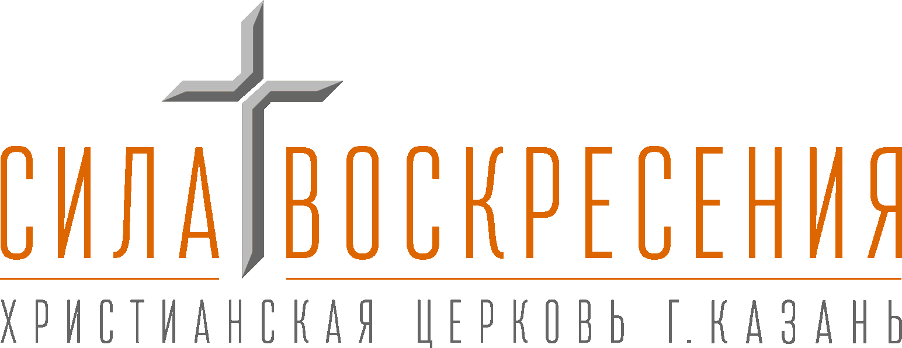

Твоя яркая
жизнь с Богом
Локации
О нас
⌄
Кто мы
Во что мы верим
Курсы
Проповеди
События
Ресурсы
Пожертвовать
ВОЙТИ
МЕНЮ
ЗАКРЫТЬ
✕
О ЦЕРКВИ
Кто мы
Во что мы верим
Курсы
Задать вопрос
БЫТЬ ЧАСТЬЮ
Локации
События
Проповеди
Пожертвовать
НАШИ ГОРОДА
Йошкар-Ола · ЙОХЦ
Казань · Сила Воскресения
Чебоксары · Сила Воскресения
ДЛЯ ВСЕХ
Дети · Йошкар-Ола
Дети · Казань
Ресурсы для церквей
Юридическая информация